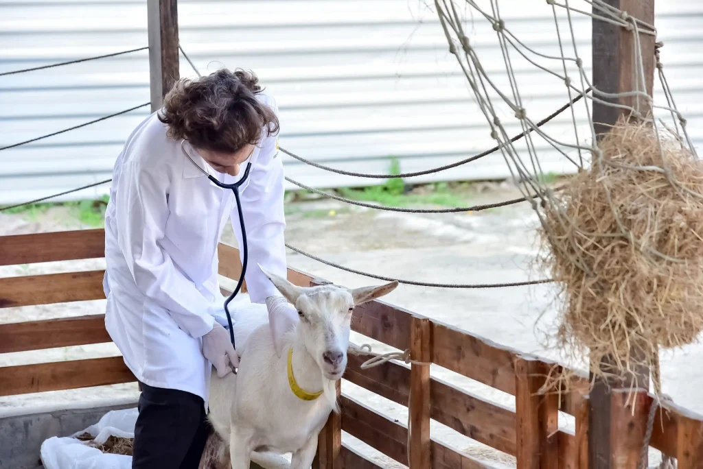
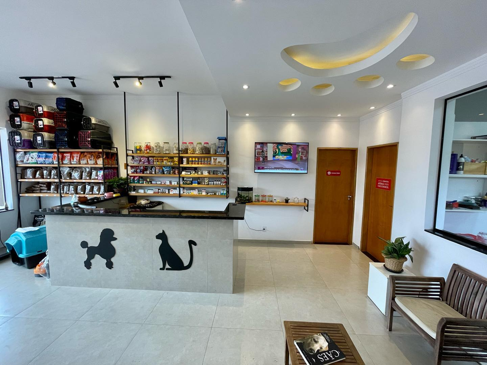
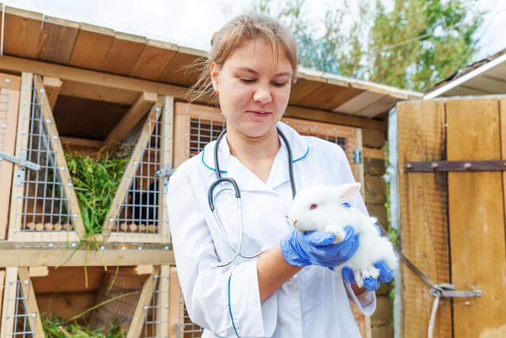
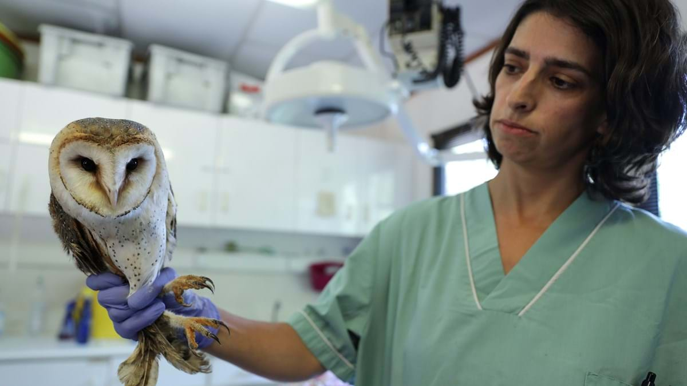
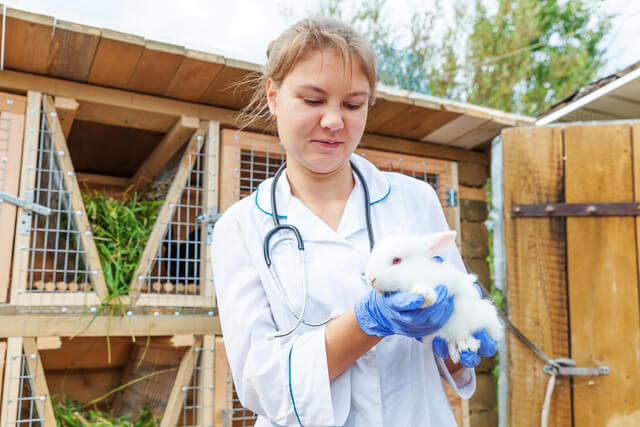
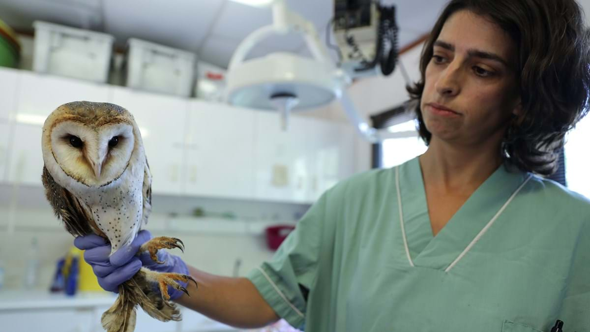
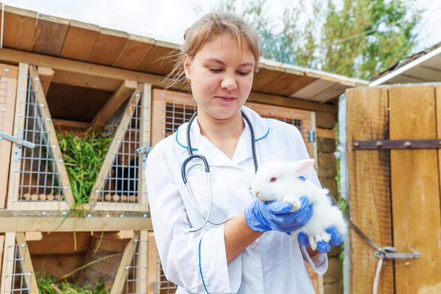
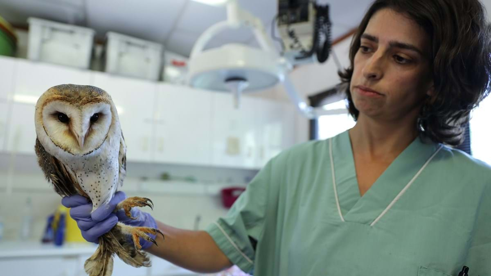
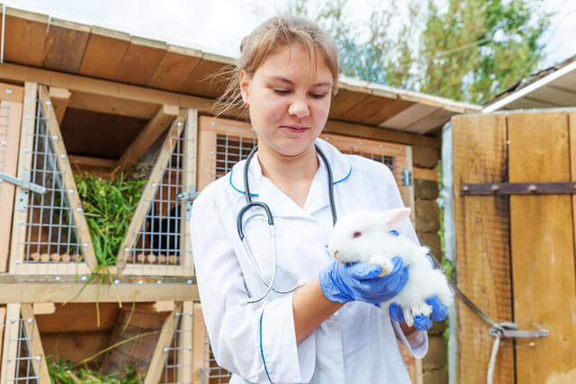
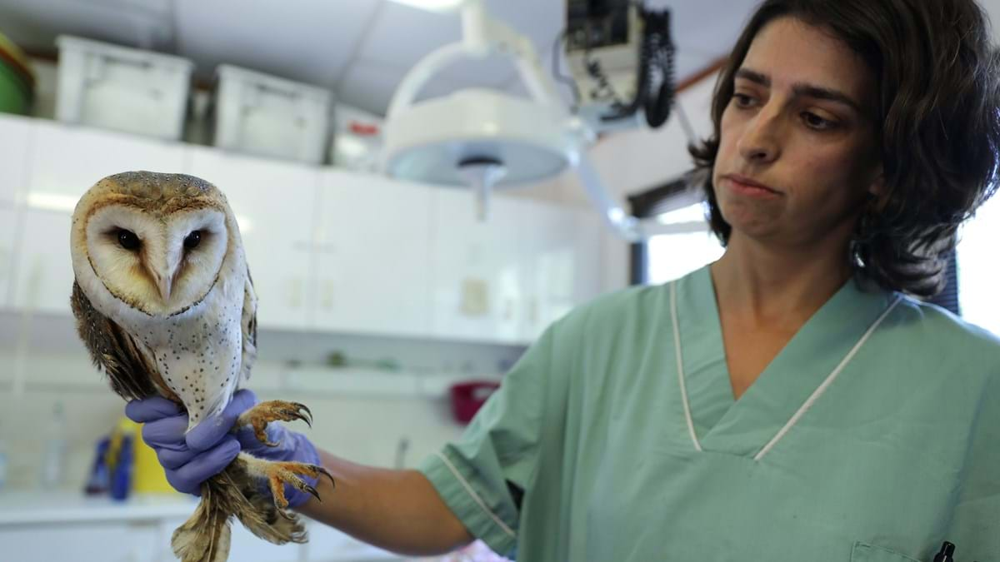

Conheça Nossa Veterinária Parceira



 







Endereço: Avenida dos animais, 123 - Bairro Wildlife, Curitiba, PR
A Salve a Todos é uma clínica veterinária dedicada a oferecer cuidados excepcionais aos animais, com o compromisso de preservar o bem-estar e a saúde dos nossos queridos amigos de quatro patas. Fundada com o propósito de proporcionar atendimento acessível e de qualidade, a clínica se destaca como parceira essencial em nossa missão de proteger e cuidar dos animais em situação de vulnerabilidade.
Contato: (41) 88888-8888
Cadastre uma Consulta Aqui